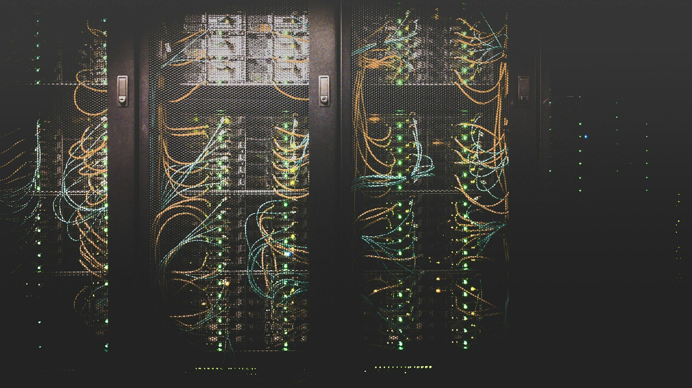

Architects & design teams
Need a MEPFT consultant who coordinates early, documents cleanly, and stays engaged through CA? We integrate with your process: BIM-first, constructible, and available when RFIs and shop drawings hit.
Tech-forward · Responsive · Integrated MEPFT
A nimble full-discipline engineering partner: modern tools, tight coordination, and people who stay flexible when the project shifts. Fast answers, clean integration across mechanical, electrical, plumbing, fire, and technology - without the big-firm lag. We aim to respond within one business day.
Who hires us
Whether you are assembling a design team, modernizing a facility, or need engineers who understand the field, SGA is a responsive, senior-led partner.
Need a MEPFT consultant who coordinates early, documents cleanly, and stays engaged through CA? We integrate with your process: BIM-first, constructible, and available when RFIs and shop drawings hit.
Want systems that perform for decades, not just pass permit? We balance capital cost, maintainability, energy, and reliability, and can commission what we design so intent matches operation.
Looking for design-assist or design-build engineering that respects sequencing, clearances, and real install conditions? Our team has worn both the design hat and the tool belt.
How we show up
Drawn from years of architect, owner, and contractor feedback - rewritten in our own words. These are the habits we hold ourselves to.
Working engineers pick up the phone and reply to email quickly - often the same day - so RFIs, reviews, and field questions do not sit in a queue.
Thorough MEPFT packages built to line up with architectural plans - detail and integration that reduce clash drama and bid confusion.
Options explained so owners and architects can choose with confidence - technical depth without requiring everyone to speak engineer.
Comfortable with rush work, permit pressure, and midstream course corrections - including stepping in when documents need to become bid-ready and code-clear.
Adapts as needs evolve: budget, existing conditions, and stakeholder priorities. Steady through construction with timely RFIs, site presence, and practical decisions.
Long-term partners value collaboration, fair approach to scope, and enthusiasm on both large and small projects - the same energy whether it is a full building or a focused renovation.
In their words
Short lines from real project feedback.
They answer the same day and keep engineering documents tightly coordinated with the architecture - professionalism and follow-through on every size of project.
They stepped in midstream, cleaned up the drawings for code and bidding, and stayed through construction with direct communication under a tight schedule.
High standards, a tight budget, and unexpected existing conditions - and field questions got answered fast enough to protect schedule and budget.
What we do
SGA ENGINEERS delivers high-quality assessment, design, and construction services across mechanical, electrical, plumbing, fire, and technology, backed by professionals who have stood in the field.
HVAC, central plants, BAS, industrial gases, and high-performance systems.
Learn more 02Power, emergency systems, lighting, arc-flash, and EV infrastructure design.
Learn more 03Domestic water, medical gases, specialty traps, and healthcare-ready fixtures.
Learn more 04Suppression, fire alarm, hydraulic calculations, and specialized systems.
Learn more 05Structured cabling, security, nurse call, A/V, and data center infrastructure.
Learn more 06BCxP-led commissioning, energy optimization, FCAs, and forensic services.
Learn moreHow we’re wired
Hands-on mentoring for students and teammates, so the next generation of engineers learn integrity, field sense, and client service the right way.
Tech-forward practice: BIM, lidar and laser scanning, point clouds, 360° cameras, drones, AR/VR, and AI, used to make drawings more accurate and construction smoother.
Responsive leadership with commissioning excellence and clear communication. We show up when partners need us, and we put integrity ahead of every other metric.

Why SGA
Partners hire us because we stay engaged: quick, direct responses from people who know the work. We are a tech-focused firm that uses emerging tools to reduce risk in the model and in the field.
Above all, we lead with integrity. Honest scopes, constructible documents from teammates with installation experience, and continuity from first call through closeout.
Mission critical
Power, cooling, redundancy, and commissioning with field realism. Built for operators who cannot afford downtime, and for partners who need engineers who stay engaged.
Selected work
Representative engagements drawn from real SGA projects.
Phased central plant and air-handler replacement with open controls, verified sequences, and live-facility cutover planning for high-reliability operations.
Chiller capacity, large custom air handler, steam humidification, and phased cutover so clinical spaces stayed open through commissioning.
Commissioning authority support with BAS/PLC integration, recurring site QA, and peer review for production-critical infrastructure.
Apparatus bay exhaust, decontamination zoning, generator backup, and full MEP plus technology for a 24/7 response facility.
Markets
Lessons from mission-critical and industrial work carry into healthcare, education, and everything in between.
How engagement works
Simple path for teams evaluating MEP engineers: clear scope, senior involvement, coordinated design, and support through construction.
Share the project type, schedule, delivery method, and pain points. We listen first and tell you honestly if we are the right fit, or who might be.
We define discipline coverage, milestones, BIM/coordination expectations, and CA/commissioning needs so the proposal matches how you actually build.
Integrated MEPFT design with 3D coordination, code compliance, and constructability reviews, not drawings that only work on paper.
Construction administration, submittal/RFI support, site presence as needed, and commissioning pathways so systems perform as intended.
“We understand finding a dedicated engineering teammate can be difficult. We want to develop a relationship with you and be your trusted partner.”Jared F. Singer, PE · Principal & Co-Founder
Common questions
Straight answers for teams comparing consulting engineers online.
What happens next
A short path from first note to a real engineering conversation - usually within one business day.
Send the project brief, schedule, and teaming needs. We aim to respond within one business day with a clear path forward.